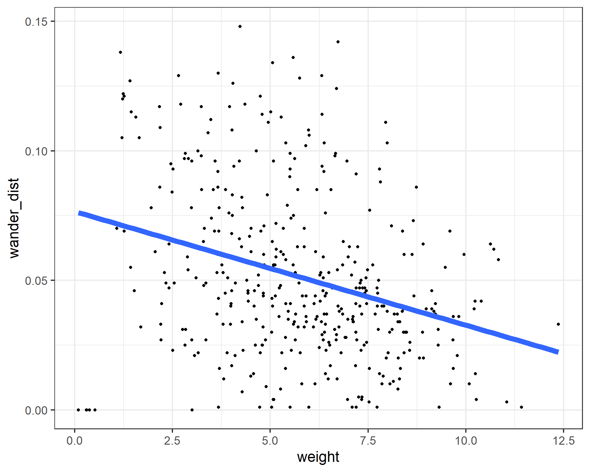
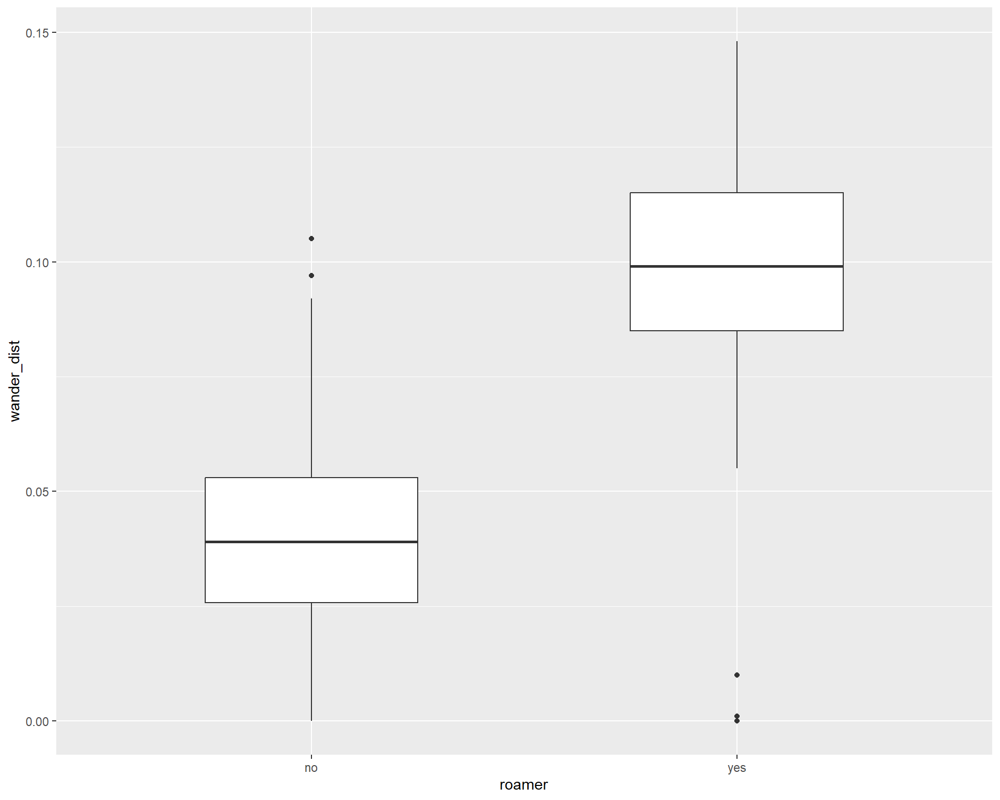
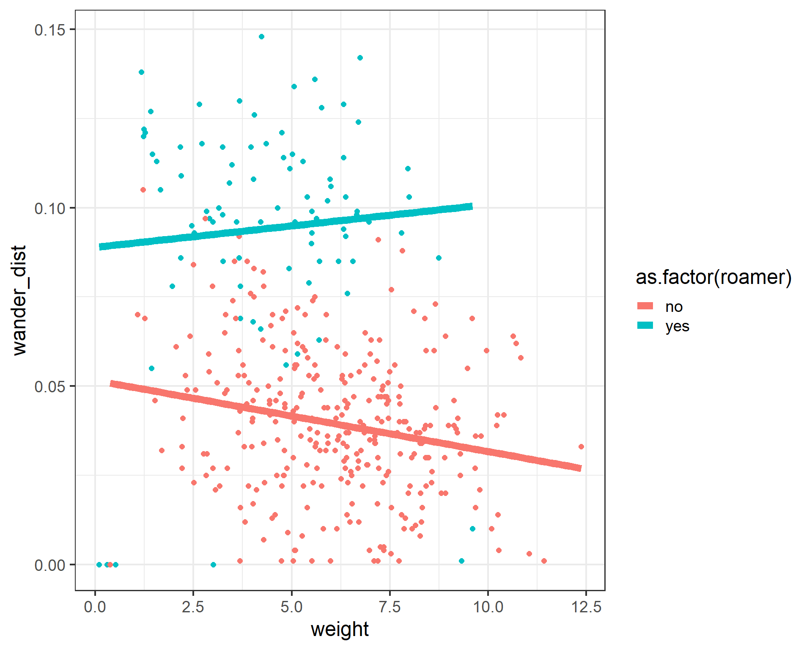
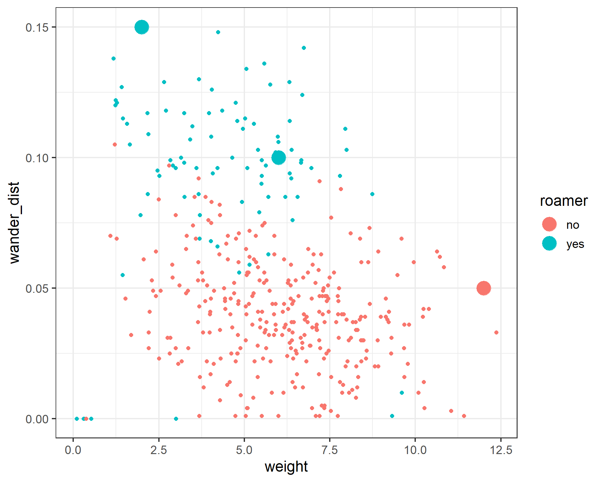
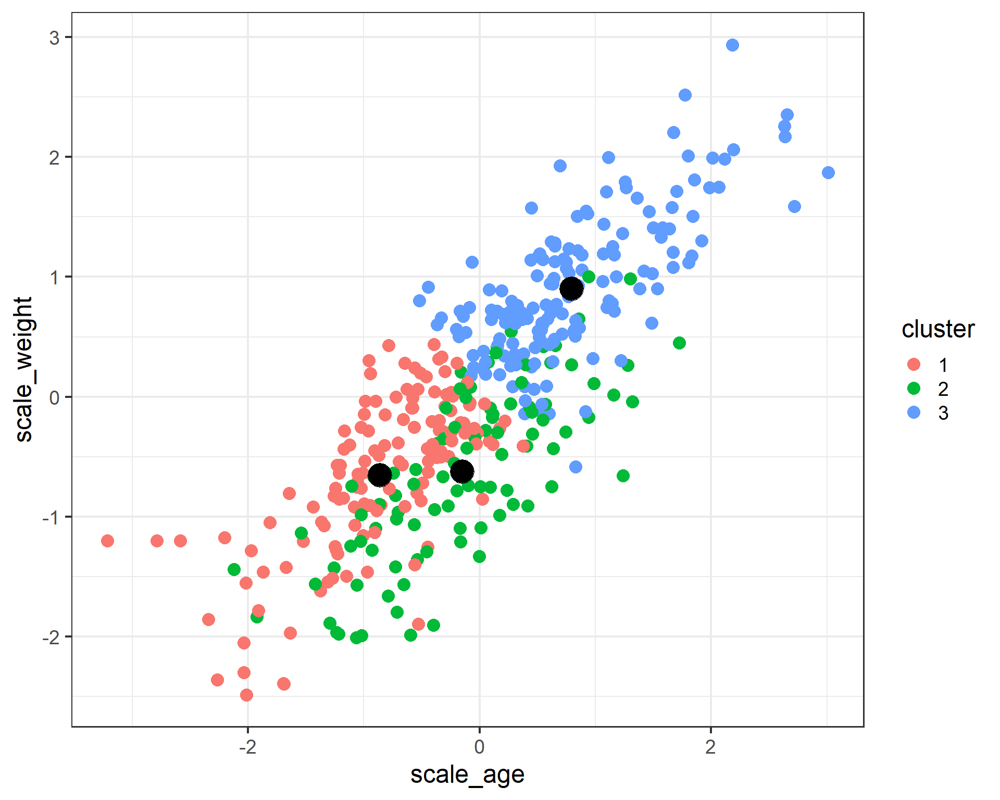
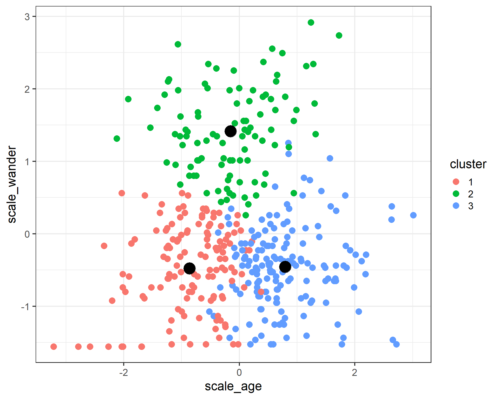
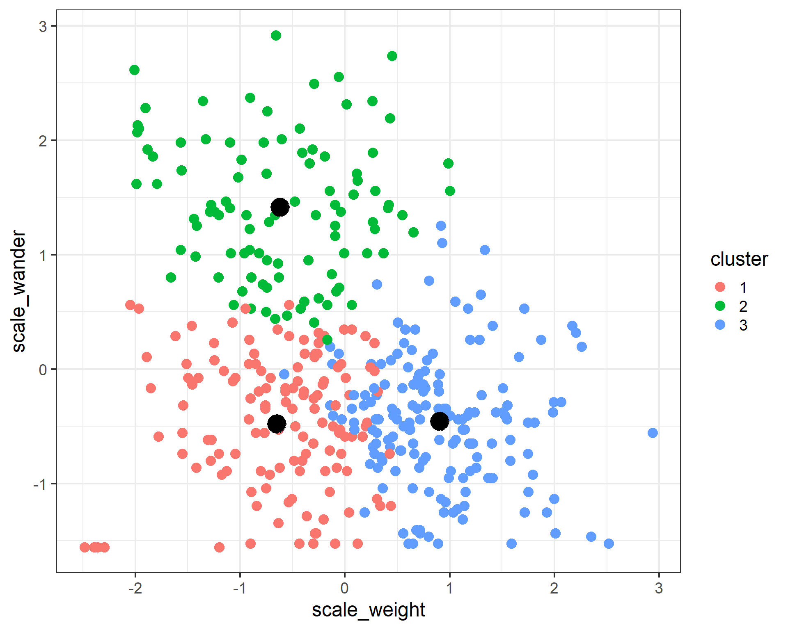

Warning: package 'ggplot2' was built under R version 4.2.2Common Statistical Techniques in R
Learning Objectives
- To become familiar with common statistical functions available in R
- Linear Regression
- Logistic Regression
- K-Means Clustering
Simple Linear Regression
Warning: `tbl_df()` was deprecated in dplyr 1.0.0.
ℹ Please use `tibble::as_tibble()` instead.Warning: Using `size` aesthetic for lines was deprecated in ggplot2 3.4.0.
ℹ Please use `linewidth` instead.
Linear regression is one of the most commonly used methods in all of statistics. It is used for a large variety of applications and offers highly interpretable results. It was the first regression method discovered and belongs to one of the most important families of models, generalized linear models.
Simple linear regression estimates the linear relationship between two variables, an outcome variable y, and an explanatory variable x.
To fit a linear regression in R, we can use the lm() function (think linear model). We use the formula notation, y~x where y is the name of your outcome variable, and x is the name of your explanatory variable, both are unquoted. The easiest way to view the results interactively is with the summary() function.
weight_fit <- lm(formula = wander_dist ~ weight, data = cats)
summary(weight_fit)
Call:
lm(formula = wander_dist ~ weight, data = cats)
Residuals:
Min 1Q Median 3Q Max
-0.076139 -0.019173 -0.004538 0.018240 0.094993
Coefficients:
Estimate Std. Error t value Pr(>|t|)
(Intercept) 0.0765553 0.0042990 17.808 <2e-16 ***
weight -0.0043866 0.0006988 -6.278 9e-10 ***
---
Signif. codes: 0 '***' 0.001 '**' 0.01 '*' 0.05 '.' 0.1 ' ' 1
Residual standard error: 0.0316 on 398 degrees of freedom
Multiple R-squared: 0.09009, Adjusted R-squared: 0.08781
F-statistic: 39.41 on 1 and 398 DF, p-value: 9.003e-10In this case, the summary function returns an object that provides a lot of interesting information when printed out. It also stores that information as part of the object, things like the terms used in the model, the coefficients of the model estimates, and the residuals of the model. This is nice if we want to do something programmatic with the results.
Multiple Linear Regression
We aren’t restricted to just one explanatory variable in linear regression. We can test the effect of a linear relationship between multiple explanatory variables simultaneously. In the lm function, we just add extra variable names in the formula separated by +’s.
wander_fit <- lm(formula = wander_dist ~ weight + age , data = cats)
summary(wander_fit)
Call:
lm(formula = wander_dist ~ weight + age, data = cats)
Residuals:
Min 1Q Median 3Q Max
-0.083498 -0.019287 -0.002461 0.017039 0.068823
Coefficients:
Estimate Std. Error t value Pr(>|t|)
(Intercept) 0.046857 0.004724 9.918 <2e-16 ***
weight -0.014260 0.001119 -12.747 <2e-16 ***
age 0.017581 0.001661 10.587 <2e-16 ***
---
Signif. codes: 0 '***' 0.001 '**' 0.01 '*' 0.05 '.' 0.1 ' ' 1
Residual standard error: 0.02794 on 397 degrees of freedom
Multiple R-squared: 0.2904, Adjusted R-squared: 0.2868
F-statistic: 81.24 on 2 and 397 DF, p-value: < 2.2e-16Challenge
Fit a model predicting wander_dist and include weight, age, and fixed as predictors. What is the estimate for the effect of being fixed on the wandering distance?
wander_fit <- lm(formula = wander_dist ~ weight + age + fixed, data = cats)
summary(wander_fit)
Call:
lm(formula = wander_dist ~ weight + age + fixed, data = cats)
Residuals:
Min 1Q Median 3Q Max
-0.091273 -0.018117 -0.001609 0.017690 0.071914
Coefficients:
Estimate Std. Error t value Pr(>|t|)
(Intercept) 0.054592 0.005074 10.760 < 2e-16 ***
weight -0.014130 0.001101 -12.836 < 2e-16 ***
age 0.017582 0.001633 10.764 < 2e-16 ***
fixed -0.011700 0.003083 -3.796 0.00017 ***
---
Signif. codes: 0 '***' 0.001 '**' 0.01 '*' 0.05 '.' 0.1 ' ' 1
Residual standard error: 0.02748 on 396 degrees of freedom
Multiple R-squared: 0.3153, Adjusted R-squared: 0.3101
F-statistic: 60.79 on 3 and 396 DF, p-value: < 2.2e-16If an explanatory variable is not binary (coded as 0s or 1s), we can still include it in the model. The lm function understands factors to be categorical variables automatically and will output the estimates with a reference category.
wander_fit <- lm(formula = wander_dist ~ weight + age + factor(coat) + sex, data = cats)
summary_fit <- summary(wander_fit)
summary_fit['coefficients']$coefficients
Estimate Std. Error t value Pr(>|t|)
(Intercept) 0.043847799 0.005622582 7.7985172 5.719688e-14
weight -0.014196808 0.001125488 -12.6139100 7.470796e-31
age 0.017760029 0.001675466 10.6000533 2.978738e-23
factor(coat)brown 0.006257836 0.004003785 1.5629800 1.188642e-01
factor(coat)calico -0.001345917 0.005120491 -0.2628492 7.928049e-01
factor(coat)maltese 0.005543267 0.005907650 0.9383201 3.486577e-01
factor(coat)tabby 0.001579503 0.004265994 0.3702545 7.113928e-01
sexmale -0.002616410 0.002870695 -0.9114206 3.626340e-01Challenge
What command will return the r-squared value from the summary_lm_fit object after running these commands:
wander_fit <- lm(formula = wander_dist ~ weight + age + fixed, data = cats) summary_lm_fit <- summary(wander_fit)
The lm function also can estimate interactions between explanatory variables. This is useful if we think that the linear relationship between our outcome y and a variable x1 is different depending on the variable x2. This can be accomplished by connecting two variables in the formula with a * instead of a +.
Challenge
Fit a linear regression model estimating the relationship between the outcome, wandering distance (
wander_dist) and explanatory variables age (age), weight (weight), with an interaction between age and weight. What is the coefficient associated with the interaction between age and weight?
wander_fit <- lm(formula = wander_dist ~ weight * age, data = cats)
summary(wander_fit)
Call:
lm(formula = wander_dist ~ weight * age, data = cats)
Residuals:
Min 1Q Median 3Q Max
-0.070356 -0.019174 -0.002753 0.019351 0.066527
Coefficients:
Estimate Std. Error t value Pr(>|t|)
(Intercept) 0.0176044 0.0096232 1.829 0.068094 .
weight -0.0086451 0.0019568 -4.418 1.29e-05 ***
age 0.0241292 0.0024971 9.663 < 2e-16 ***
weight:age -0.0011310 0.0003255 -3.474 0.000569 ***
---
Signif. codes: 0 '***' 0.001 '**' 0.01 '*' 0.05 '.' 0.1 ' ' 1
Residual standard error: 0.02756 on 396 degrees of freedom
Multiple R-squared: 0.3114, Adjusted R-squared: 0.3062
F-statistic: 59.69 on 3 and 396 DF, p-value: < 2.2e-16Logistic Regression
If we are analyzing a binary outcome, we can use logistic regression. Logistic regression uses the linear model framework, but makes different assumptions about the distribution of the outcome. So we can look for associations between binary outcome variables and multiple explanatory variables.
ggplot(cats, aes(x = roamer, y = wander_dist)) +
geom_boxplot(width = 0.5)
For logistic regression, we use the glm function. It takes formula and data arguments like the lm function, but we also need to specify a family. For logistic, we pass binomial as the family, which tells the glm function that we have a binary outcome, and we want to use the logit link function.
roamer_fit <- glm(formula = as.factor(roamer) ~ wander_dist, data = cats, family = binomial )We can use the summary function to extract important information from the object that glm returns, just like with the lm function
glm_summary <- summary(roamer_fit)
glm_summary
Call:
glm(formula = as.factor(roamer) ~ wander_dist, family = binomial,
data = cats)
Deviance Residuals:
Min 1Q Median 3Q Max
-1.9068 -0.3812 -0.2234 -0.0767 3.4678
Coefficients:
Estimate Std. Error z value Pr(>|z|)
(Intercept) -6.0103 0.5634 -10.668 <2e-16 ***
wander_dist 72.8672 7.4867 9.733 <2e-16 ***
---
Signif. codes: 0 '***' 0.001 '**' 0.01 '*' 0.05 '.' 0.1 ' ' 1
(Dispersion parameter for binomial family taken to be 1)
Null deviance: 421.53 on 399 degrees of freedom
Residual deviance: 212.89 on 398 degrees of freedom
AIC: 216.89
Number of Fisher Scoring iterations: 6Challenge
roamer_fit <- glm(formula = as.factor(roamer) ~ wander_dist + weight, data = cats, family = binomial )
summary(roamer_fit)
Call:
glm(formula = as.factor(roamer) ~ wander_dist + weight, family = binomial,
data = cats)
Deviance Residuals:
Min 1Q Median 3Q Max
-2.2674 -0.3752 -0.1984 -0.0728 3.6661
Coefficients:
Estimate Std. Error z value Pr(>|z|)
(Intercept) -4.44909 0.75765 -5.872 4.3e-09 ***
wander_dist 68.99577 7.57569 9.108 < 2e-16 ***
weight -0.25096 0.09484 -2.646 0.00814 **
---
Signif. codes: 0 '***' 0.001 '**' 0.01 '*' 0.05 '.' 0.1 ' ' 1
(Dispersion parameter for binomial family taken to be 1)
Null deviance: 421.53 on 399 degrees of freedom
Residual deviance: 205.44 on 397 degrees of freedom
AIC: 211.44
Number of Fisher Scoring iterations: 6We can look at the effects of multiple covariates on our binary outcome with logistic regression, just like with linear regression. We just add as many variable names as we’d like to the right side of the formula argument, separated by + symbols.
ggplot(cats, aes(x = weight, y = wander_dist, color = as.factor(roamer))) +
geom_point(size = 2) +
geom_smooth(method = 'lm', se = FALSE, size = 3) +
theme_bw(base_size = 18)`geom_smooth()` using formula = 'y ~ x'
# cats$roamer <- relevel(cats$roamer, ref = 'yes')
roamer_fit <- glm(formula = as.factor(roamer) ~ wander_dist + weight, data = cats, family = binomial )
glm_summary <- summary(roamer_fit)
glm_summary
Call:
glm(formula = as.factor(roamer) ~ wander_dist + weight, family = binomial,
data = cats)
Deviance Residuals:
Min 1Q Median 3Q Max
-2.2674 -0.3752 -0.1984 -0.0728 3.6661
Coefficients:
Estimate Std. Error z value Pr(>|z|)
(Intercept) -4.44909 0.75765 -5.872 4.3e-09 ***
wander_dist 68.99577 7.57569 9.108 < 2e-16 ***
weight -0.25096 0.09484 -2.646 0.00814 **
---
Signif. codes: 0 '***' 0.001 '**' 0.01 '*' 0.05 '.' 0.1 ' ' 1
(Dispersion parameter for binomial family taken to be 1)
Null deviance: 421.53 on 399 degrees of freedom
Residual deviance: 205.44 on 397 degrees of freedom
AIC: 211.44
Number of Fisher Scoring iterations: 6names(glm_summary) [1] "call" "terms" "family" "deviance"
[5] "aic" "contrasts" "df.residual" "null.deviance"
[9] "df.null" "iter" "deviance.resid" "coefficients"
[13] "aliased" "dispersion" "df" "cov.unscaled"
[17] "cov.scaled" glm_summary$coefficients Estimate Std. Error z value Pr(>|z|)
(Intercept) -4.4490855 0.75764856 -5.872229 4.299754e-09
wander_dist 68.9957683 7.57569390 9.107518 8.428814e-20
weight -0.2509641 0.09484151 -2.646141 8.141576e-03glm_summary$null.deviance[1] 421.5264glm_summary$deviance[1] 205.4406glm_summary$aic[1] 211.4406We can also use the model objects to predict on unobserved values. We just need to pass a data frame with all of the terms used in the original model to the predict function. The predict function will return values in a few different ways. The default value of the type argument is “link” and will return things on the same scale as the linear predictors. This is often not what we want. If we pass “response” to the type argument, we’ll get predicted values on the same scale as the response. In the logistic case, this is the predicted probability.
new_cats <- data.frame(wander_dist = c(0.15, 0.10, 0.05),
weight = c(2, 6, 12))
new_cats wander_dist weight
1 0.15 2
2 0.10 6
3 0.05 12predicted_logit <- predict(object = roamer_fit, newdata = new_cats)
predicted_logit 1 2 3
5.3983516 0.9447069 -4.0108658 predicted_probs <- predict(object = roamer_fit, newdata = new_cats, type = 'response')
predicted_probs 1 2 3
0.99549634 0.72004946 0.01779529 We can then predict whether each cat is a roamer or not based on the predicted probabilty from our model. We need to assign a cut-off probability.
new_cats$predicted_prob <- predicted_probs
new_cats <- new_cats %>% mutate(roamer = ifelse(predicted_prob > 0.5, 'yes', 'no'))
ggplot(cats, aes(x = weight, y = wander_dist, color = roamer, group = roamer)) +
geom_point(size = 2) +
geom_point(data = new_cats, aes(x = weight, y = wander_dist, color = roamer), size = 8) +
theme_bw(base_size = 18)
K-means Clustering
Another popular machine learning technique is k-means clustering. It seeks to group your data into a fixed number of clusters based on a measure of distance. An important pre-processing step to clustering is the center and scale your data.
cats <- cats %>%
mutate(scale_weight = scale(weight),
scale_wander = scale(wander_dist),
scale_age = scale(age))We use the kmeans function to perform the clustering, and need to pass it a data frame, the number of centers we want, and another argument nstart, which helps get around some numerical issues if the algorithm gets stuck in a local extrema.
cats_cluster <-
kmeans(x = cats %>% select(scale_weight, scale_wander, scale_age),
centers = 3,
nstart = 20)
str(cats_cluster)List of 9
$ cluster : int [1:400] 2 2 2 2 3 1 2 3 3 2 ...
$ centers : num [1:3, 1:3] -0.654 -0.621 0.902 -0.479 1.416 ...
..- attr(*, "dimnames")=List of 2
.. ..$ : chr [1:3] "1" "2" "3"
.. ..$ : chr [1:3] "scale_weight" "scale_wander" "scale_age"
$ totss : num 1197
$ withinss : num [1:3] 163 144 187
$ tot.withinss: num 494
$ betweenss : num 703
$ size : int [1:3] 135 99 166
$ iter : int 3
$ ifault : int 0
- attr(*, "class")= chr "kmeans"cats_cluster$centers scale_weight scale_wander scale_age
1 -0.6537444 -0.4787674 -0.8643999
2 -0.6208415 1.4159815 -0.1528717
3 0.9019205 -0.4551119 0.7941463We can use ggplot to visualize the clusters.
cats$cluster <- factor(cats_cluster$cluster)
cluster_centers <- as.data.frame(cats_cluster$centers)
ggplot(data = cats) +
geom_point(aes(x = scale_age, y = scale_weight, color = cluster), size = 4) +
geom_point(data = cluster_centers, aes(x = scale_age, y = scale_weight), color = 'black', size = 8) +
theme_bw(base_size = 18)
ggplot(data = cats) +
geom_point(aes(x = scale_age, y = scale_wander, color = cluster), size = 4) +
geom_point(data = cluster_centers, aes(x = scale_age, y = scale_wander), color = 'black', size = 8) +
theme_bw(base_size = 18)
ggplot(data = cats) +
geom_point(aes(x = scale_weight, y = scale_wander, color = cluster), size = 4) +
geom_point(data = cluster_centers, aes(x = scale_weight, y = scale_wander), color = 'black', size = 8) +
theme_bw(base_size = 18)